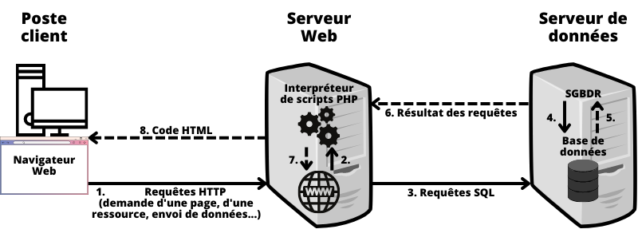
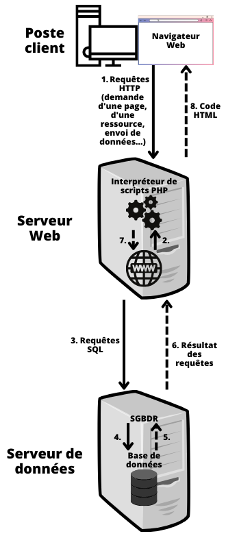

Question 3 : La résolution de tous les problèmes de gestion est-elle automatisable ?
I. Introduction à la programmation
A. Démarche algorithmique
L'algorithmique est une démarche de résolution des problèmes dont la logique est : à partir de données (1) dont on dispose initialement, effectuer des traitements (2) afin d'arriver à un résultat (3).
| Étapes | Mise en œuvre | Exemple |
|---|---|---|
|
Date de naissance : entrée par l'utilisateur | 23 / 07 / 2000 |
| Date du jour : récupération automatique auprès de l'horloge interne de l'ordinateur | 15 / 10 / 2016 | |
|
Calcul du nombre de jours depuis la naissance | 15 / 10 / 2016 - 23 / 07 / 2000 = 5 928 jours |
| Conversion de ce nombre de jours en années | 5 928 / 365,25 = 16,23 années | |
| Arrondi inférieur du nombre d'années obtenu | Arrondi inférieur de 16,23 = 16 ans | |
|
Affichage de l'âge | « Vous avez 16 ans. » |
B. Programmation
Une fois le raisonnement établi, il peut être codé dans un langage de programmation afin de l'automatiser. Cela sera illustré en PHP dans ce chapitre.
PHP est un langage de programmation notamment utilisé pour produire des pages web dynamiques (leur contenu change selon les actions de l'utilisateur, à l'inverse du HTML qui génère des pages web statiques). Dans ce cadre, un script PHP est exécuté par l'interpréteur d'un serveur web, en interaction avec un navigateur client (auquel il renvoie du HTML) via le protocole HTTP (voir chapitre 6).
Outre cet usage, PHP peut fonctionner de façon « non web » sur un poste disposant d'un interpréteur.
Fonctionnement des requêtes web dans l'architecture client-serveur :
 
- Lorsqu'un internaute demande à consulter une page web, son navigateur (client) envoie une requête HTTP au serveur web.
Si la page web ne contient aucun script PHP (elle est format .html ou .htm), on passe directement à l'étape 8.
- Lorsque la ressource demandée nécessite un traitement, le serveur web fait appel à un interpréteur de script associé et lui transmet des valeurs éventuelles de paramètres (reçues du client).
Si le script PHP ne contient aucun recours à une base de données, on passe directement à l'étape 7.
- Le script peut demander des données issues d'une base : une connexion (autorisée) s'établit alors avec un serveur de données auquel des requêtes sont transmises (voir question 4).
- à 6. Le SGBDR (système de gestion de base de données relationnelle) exécute les requêtes et transmet en retour, un résultat (un code de succès ou non et les données éventuellement demandées).
- L'interpréteur (du serveur web) achève ses traitements à l'aide des données et fournit un code HTML.
- Le serveur web transmet ce code HTML par le protocole HTTP dont le navigateur assure la présentation.
Les notions de client et de serveur sont des notions logicielles. Ces logiciels peuvent donc être installés et exécutés sur une à plusieurs machines (appelées par extension postes client et serveur).
II. Syntaxe de base en PHP
Remarques :
- Il s'agit ici de faire une introduction à la programmation, le langage PHP ressemble beaucoup à d'autres langages de programmation, notamment dans sa syntaxe ;
- Le langage PHP est surtout utilisé pour écrire des scripts côté serveur (afin de collecter des données de formulaire, générer du contenu dynamique, ou encore gérer des cookies) et supporte énormément de bases de données ;
- Je vous recommande vivement de pratiquer, sur par exemple le compilateur W3Schools, n'ayez pas peur de faire des erreurs, elles sont constructives ;
- Consultez la référence du langage (documentation officielle) ou faites des recherches si vous ne comprenez pas ou doutez de quelque chose ;
A. Balises PHP
Lorsque PHP traite un fichier, il cherche les balises d'ouverture et de fermeture (<?php et ?>) qui délimitent le code qu'il doit interpréter. De cette manière, cela permet à PHP d'être intégré dans toutes sortes de documents (ex : HTML), car tout ce qui se trouve en dehors des balises ouvrantes / fermantes de PHP est ignoré.
Exemple :
B. Séparation des instructions (en PHP)
Tous les scripts PHP sont une suite d'instructions. Une instruction peut être une assignation, un appel de fonction, ou encore une instruction conditionnelle.
Une instruction se termine habituellement par un point virgule (";"). De plus, plusieurs instructions peuvent être regroupées en bloc, délimité par des accolades ("{}").
Commentaires (en PHP)
Des commentaires (non interprétés, utiles aux développeurs) peuvent être insérés dans le code PHP, il en existe 2 types :
Les 2 barres obliques signalent le début d'un commentaire s'arrêtant à la fin de la ligne (une seule ligne)Cette notation permet de commenter sur plusieurs lignes (le commentaire s'arrête une fois l'astérisque et la barre oblique de fin rencontrées)
III. Les variables en PHP
En PHP, les variables sont représentées par un signe dollar "$" suivi du nom de la variable. Le nom est sensible à la casse ($NomVariable et $nomVariable sont 2 variables distinctes).
Un nom de variable valide doit commencer par une lettre ou un souligné (_), suivi de lettres, chiffres ou soulignés.
Exemples sur la validité des noms de variable :
<?php$myvar="Jean";signifie que l'on affecte la valeur "Jean" à la variable $myvar (voir opérateurs d'affectation)$myVar="Paul";echo"$myvar, $myVar";affiche "Jean, Paul" (echo permet d'afficher du contenu)$4site ="pas encore";invalide : commence par un nombre$_4site="pas encore";valide : commence par un souligné?>
IV. Les types en PHP
En PHP, chaque expression a l'un des types intégrés suivants en fonction de sa valeur (certains types ont été enlevés par soucis de simplicité, voir manuel) :
| Types en PHP | Explications | Exemples |
|---|---|---|
| bool | C'est le type le plus simple. Un bool représente une valeur de vérité. Il peut valoir true ou false. | $ |
| Entier (int) | Un entier est un nombre qui appartient à l'ensemble ℤ = {..., -2, -1, 0, 1, 2, ...} | $ |
| Nombre à virgule flottante (float) | Aussi connu comme "float", "double", ou "nombre réel". Leur précision étant limitée, il faut être prudent dans leur utilisation | $ |
| Chaîne de caractères (string) | Guillemets simples : '. La façon la plus simple de spécifier une chaîne de caractères | $ |
| Guillemets doubles : ". Permet aux variables d'être interprétées | $ |
|
| Tableau (array) | Les tableaux permettent de regrouper plusieurs éléments (pouvant être de types différents, y compris un autre tableau) dans une "liste" (suite de "cases"). À chaque valeur est associé une clé (sa déclaration est optionnelle) | $ $ |
| null |
Représente une variable sans valeur. Une variable est considérée comme null si :
|
$ |
PHP est un langage typé dynamiquement, ce qui signifie que par défaut, il n'est pas nécessaire de spécifier le type d'une variable, car cela sera déterminé au moment de l'exécution.
Une variable dite élémentaire ne peut contenir à un moment donné qu'une seule valeur ; toute nouvelle valeur affectée à cette variable remplace son ancienne valeur stockée.
Une variable structurée peut stocker plusieurs valeurs simultanément, c'est le cas des tableaux.
IV. Les opérateurs (en PHP)
A. Les opérateurs arithmétiques
Les opérateurs arithmétiques fonctionnent comme en mathématiques :
| Exemple | Nom | Explications |
|---|---|---|
| $a + $b | Addition | Somme de $a et $b |
| $a - $b | Soustraction | Différence de $a et $b |
| $a * $b | Muliplication | Produit de $a et $b |
| $a / $b | Division | Quotient de $a et $b |
| $a % $b | Modulus | Reste de $a divisé par $b |
| $a ** $b | Exponentiation | Résultat de l'élévation de $a à la puissance $b |
B. Les opérateurs d'affectation (en PHP)
L'opérateur d'affectation le plus simple est le signe "=". Le premier réflexe est de penser que ce signe veut dire "égal à". Ce n'est pas le cas. Il signifie que l'opérande de gauche se voit affecter la valeur de l'expression qui est à droite du signe égal.
En plus du simple opérateur d'affectation, il existe des "opérateurs combinés" pour tous les opérateurs arithmétiques, l'union de tableaux et pour les opérateurs sur les chaînes de caractères. Cela permet d'utiliser la valeur d'une variable dans une expression et d'affecter le résultat de cette expression à cette variable. Par exemple :
<?php$a=3; $a+=5;affecte la valeur 8 à la variable $a, correspond à l'instruction '$a = $a + $b'$b='Bonjour'; $b.=' tout le monde';affecte la valeur 'Bonjour tout le monde' à la variable $b, équivaut à '$b = $b . " tout le monde"'?>
C. Les opérateurs de comparaison (en PHP)
Les opérateurs de comparaison, comme leur nom l'indique, vous permettent de comparer deux valeurs.
| Exemple | Nom | Résultat |
|---|---|---|
| $a == $b | Égal | true si $a est égal à $b après le transtypage |
| $a === $b | Identique | true si $a est égal à $b et qu'ils sont de même type |
| $a != $b | Différent | true si $a est différent de $b après le transtypage |
| $a !== $b | Différent | true si $a est différent de $b ou s'ils sont de type différent |
| $a < $b | Plus petit que | true si $a est strictement inférieur à $b |
| $a > $b | Plus grand que | true si $a est strictement supérieur à $b |
| $a <= $b | Inférieur ou égal | true si $a est inférieur ou égal à $b |
| $a >= $b | Supérieur ou égal | true si $a est supérieur ou égal à $b |
| $a <=> $b | Combiné |
|
D. Les opérateurs logiques (en PHP)
Ces opérateurs sont fondés sur l'algèbre de Boole (ou calcul booléen) qui est la partie des mathématiques qui s'intéresse à une approche algébrique de la logique.
Exemple introductif à l'algèbre de Boole :
L'algèbre de Boole permet de modéliser des raisonnements logiques, en exprimant un « état » en fonction de conditions. Par exemple, si nous étudions l'expression Communication et l'expression Décrocher :
Communication
Communication = Émetteur ET Récepteur
Communication serait « VRAI » si à la fois les variables Émetteur ET Récepteur étaient actifs (c'est une fonction logique dépendant des variables Émetteur et Récepteur).
Décrocher
Décrocher = (Sonnerie ET Décision de répondre) OU Décision d'appeler
Décrocher serait « VRAI » soit si à la fois on entend la sonnerie ET l'on décide de répondre, soit (OU) si simplement l'on décide d'appeler.
| Exemple | Nom | Résultat |
|---|---|---|
| ! $a | Not (Non) | true si $a n'est pas true (donc $a vaut false) |
| $a && $b | And (Et) | true si $a ET $b valent true |
| $a || $b | Or (Ou) | true si $a OU $b valent true |
E. Les opérateurs d'incrémentation et de décrémentation (en PHP)
Ces opérateurs permettent d'effectuer deux opérations à la fois dans l'ordre que l'on souhaite :
| Exemple | Nom | Résultat |
|---|---|---|
| ++$a | Pré-incrémentation | Incrémente $a de 1 (équivaut à $a = $a + 1), puis retourne $a |
| --$a | Pré-décrémentation | Décrémente $a de 1 (équivaut à $a = $a - 1), puis retourne $a |
| $a++ | Post-incrémentation | Retourne $a, puis incrémente $a de 1 (équivaut à $a = $a + 1) |
| $a-- | Pré-incrémentation | Retourne $a, puis décrémente $a de 1 (équivaut à $a = $a - 1) |
V. Les structures de contrôle (en PHP)
A. La structure "if" (en PHP)
L'instruction if est une des plus importantes instructions de tous les langages, PHP inclus. Elle permet l'exécution conditionnelle d'une partie de code.
if(expression) commandes
if requiert que expression soit un argument de type booléen (il sera automatiquement convertie en sa valeur booléenne autrement). Si l'expression vaut true, PHP exécutera l'instruction et si elle vaut false, l'instruction sera ignorée.
L'exemple suivant affiche la phrase a est plus grand que b si $a est plus grand que $b :
<?phpif($a> $b)echo"a est plus grand que b";?>
Souvent, vous voulez que plusieurs instructions soient exécutées après un branchement conditionnel. Bien évidemment, il n'est pas obligatoire de répéter l'instruction conditionnelle if autant de fois que vous avez d'instructions à exécuter. À la place, vous pouvez rassembler toutes les instructions dans un bloc. L'exemple suivant affiche a est plus grand que b, si $a est plus grand que $b, puis assigne la valeur de $a à la variable $b :
<?phpif($a> $b) {echo"a est plus grand que b"; $b= $a; }?>
Vous pouvez imbriquer indéfiniment des instructions if dans d'autres instructions if, ce qui permet une grande flexibilité dans l'exécution d'une partie de code suivant un grand nombre de conditions.
B. La structure "if/else" (en PHP)
Souvent, vous voulez exécuter une instruction si une condition est remplie et une autre instruction si cette condition n'est pas remplie. C'est à cela que sert else. else fonctionne après un if et exécute les instructions correspondantes au cas où l'expression du if est false. Dans l'exemple suivant, ce bout de code affiche a est plus grand que b si la variable $a est plus grande que la variable $b, et a est plus petit que b sinon :
<?phpif($a> $b) {echo"a est plus grand que b"; }else{echo"a est plus petit que b"; }?>
C. La structure "if/else if" (en PHP)
else if, comme son nom l'indique, est une combinaison de if et de else. Comme l'expression else, il permet d'exécuter une instruction après un if dans le cas où le "premier" if est évalué comme false. Mais, à la différence de l'expression else, il n'exécutera l'instruction que si l'expression conditionnelle else if est évaluée comme true. L'exemple suivant affichera a est plus grand que b, a est égal à b ou a est plus petit que b :
<?phpif($a> $b) {echo"a est plus grand que b"; }else if($a== $b) {echo"a est égal à b"; }else{echo"a est plus petit que b"; }?>
Vous pouvez avoir plusieurs else if qui se suivent les uns après les autres, après un if initial. Le premier else if qui sera évalué à true sera exécuté.
L'expression else if est exécutée seulement si le if précédent et tout autre else if précédent sont évalués comme false, et que votre else if est évalué à true.
D. La structure "while" (en PHP)
La boucle while est le moyen le plus simple d'implémenter une boucle en PHP.
while(expression) commandes
La signification d'une boucle while est très simple. PHP exécute l'instruction tant que l'expression de la boucle while est évaluée comme true. La valeur de l'expression est vérifiée à chaque début de boucle, et, si la valeur change durant l'exécution de l'instruction, l'exécution ne s'arrêtera qu'à la fin de l'itération (chaque fois que PHP exécute l'instruction, on appelle cela une itération). Si l'expression du while est false avant la première itération, l'instruction ne sera jamais exécutée.
Comme avec le if, vous pouvez regrouper plusieurs instructions dans la même boucle while en les regroupant à l'intérieur d'accolades.
Exemple :
<?php$i=1;while($i<=5) {echo$i++;Affiche $i avant l'incrémentation (post-incrémentation)}?>
> 12345
La structure "for" (en PHP)
Les boucles for sont les boucles les plus complexes en PHP. Leur syntaxe est la suivante :
for(expr1 ; expr2 ; expr3) commandes
La première expression (expr1) est évaluée (exécutée), quoi qu'il arrive au début de la boucle.
Au début de chaque itération, l'expression expr2 est évaluée. Si l'évaluation vaut true, la boucle continue et les commandes sont exécutées. Si l'évaluation vaut false, l'exécution de la boucle s'arrête.
À la fin de chaque itération, l'expression expr3 est évaluée (exécutée).
Exemple :
<?phpfor($i=1; $i<=5; $i++) {echo$i; }?>
> 12345
VI. Les Fonctions (en PHP)
Une fonction désigne un « sous-programme » (une partie de code) permettant d'effectuer des opérations répétitives. Au lieu d'écrire le code complet autant de fois que nécessaire, on crée une fonction que l’on appellera pour l'exécuter, ce qui peut aussi alléger le code, le rendre plus lisible.
Les informations fournies à la fonction sont appelées arguments ou paramètres de la fonction.
Les informations renvoyées par la fonction sont appelées résultat.
A. Les fonctions prédéfinies
PHP possède des fonctions pré-définis qui peuvent servir par exemple :
- à effectuer des opérations sur des chaînes de caractères (ex : tout mettre en minuscules, majuscules, connaître le nombre de caractères, remplacer des caractères, afficher du texte...) ;
- dans la gestion des dates et des heures (ex : récupérer l'heure du serveur) ;
- à faire des calculs mathématiques...
Exemple d'appel de la fonction strlen() :
strlen() (comprendre "string length") calcul et retourne la taille de la chaîne fournie en paramètre.
$uneChaine="Guess my length"; $longueurUneChaine=strlen($uneChaine);echo"$uneChaine a $longueurUneChaine caractère(s)";
> Guess my length a 15 caractère(s)
B. Les fonctions définies par l'utilisateur
Une fonction peut être créée en utilisant le mot clé function suivi du nom de la fonction, puis d'éventuels paramètres entre parenthèses séparés par une virgule :
functionnomDeLaFonction($arg1, $arg2) {Corps de la fonction}
Exemples de déclaration :
Cette fonction ne prend pas d'argument et retourne null (absence du mot-clé "return"), elle affiche Hello world!functionafficheBonjour() {echo"Hello world!"; }
Cette fonction prend un argument ($couleur) et retourne true si $couleur vaut "bleu", "jaune" ou "rouge", false dans tous les autres casfunctionestCouleurPrimaire($couleur) {return$couleur==="bleu"|| $couleur==="jaune"|| $couleur==="rouge"; }
Exemples d'appel :
afficheBonjour(); $uneCouleur=estCouleurPrimaire("bleu");$uneCouleur vaut true$uneAutreCouleur=estCouleurPrimaire("violet");$uneAutreCouleur vaut false
> Hello world!
VI. Accès aux données d'une base
Les données d'un programme ne sont pas persistantes puisque toutes les variables sont effacées en fin d'exécution du programme. Les données à conservées sont souvent enregistrées dans des bases de données auxquelles les programmes peuvent avoir accès (en insertion, mise à jour, interrogation ou suppression).